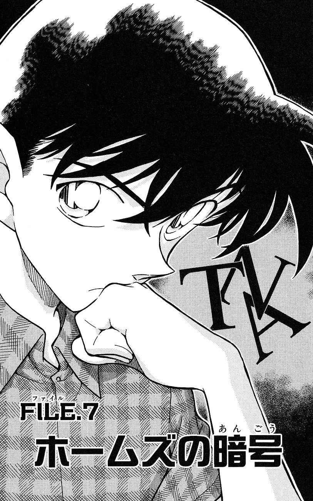
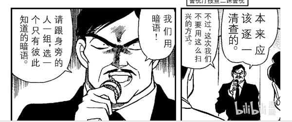
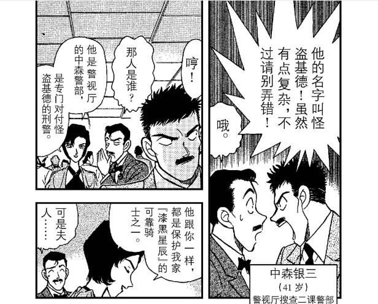

其中两话标题：向福尔摩斯询问，福尔摩斯的暗号。而剧情内是柯南这个平成福尔摩斯解读了化自《福尔摩斯探案集》的暗号，但也可以解读为：向柯南询问：“福尔摩斯”这个暗号对应的答案是什么。
它的隐藏方式是：真正该留下的字母S与外表没有差别的其他字母混在一起
漆黑之星篇的对应为铃木朋子发放大量仿制漆黑之星给宾客来隐藏真正的漆黑之星。基德逃离天台的手段也是变装为警察混入警察群里。 标题cue基德客串的漆黑之星篇有意义吗？
2003年访谈时,青山就在访谈中明确表明自己想画柯哀在伦敦的故事，但在考虑怎么解决高山南提出的护照问题，而与泰晤士河同音的堤无津川就是出自漆黑之星篇。并且由小五郎指出：堤无津川是错误的地点。如今泰晤士河给予了新兰，堤无津川给予了柯哀，但以伦敦篇最初为柯哀篇的话，青山设想就是把泰晤士河给予柯哀，堤无津川给予新兰。在标题里指向这话是为了告知伦敦篇最初是柯哀篇，出于护照问题难以逻辑自洽无奈只能将错误地点给了柯哀。
漆黑之星，balck star，black仅仅只是单纯的形容词而不带有对颜色深浅的划分，可以解释为看起来是黑色的星星，众所周知，宫野志保的发音逆读为星之暗，直译就是星星的黑暗，black star的倒装，那么，漆黑之星就是在暗示宫野志保，同时暗示她是外表看起来是黑色，但并不黑暗（dark）的人。（小五郎本篇内也有谐音玩法） 柯南在本篇内指出：珍珠代表月亮与女性，铃木朋子则说漆黑之星有着骑士们保护，然而最后只有柯南成为真正保护了漆黑之星的骑士，其他人不是骑士。（73对只有柯南可以是骑士的表现）
园子也指出“漆黑之星”可以带来好运。 可总结为一句话→并不真的黑暗，只是看起来在黑暗里，能为人带来好运的月亮女孩宫野志保会被唯一的骑士江户川柯南所保护。而哀给柯南带来什么好运也不用我多说吧
可总结为一句话→并不真的黑暗，只是看起来在黑暗里，能为人带来好运的月亮女孩宫野志保会被唯一的骑士江户川柯南所保护。而哀给柯南带来什么好运也不用我多说吧
据其他人的分析指出，按照默示录福尔摩斯事件发生的顺序，对伦敦篇暗号排序可得，“TARA SUN”，如果太阳，好像找不到什么联系，可这是福尔摩斯案件排序啊？漫画标题也明确指出“福尔摩斯的暗号”，加上福尔摩斯，就变成了福尔摩斯如果（是）太阳→平成年代的福尔摩斯工藤新一如果是太阳，再联系福尔摩斯的暗号对应的漆黑之星篇，解得平成年代的福尔摩斯工藤新一如果是太阳，能为人带来好运的月亮女孩宫野志保就是他所守护的人 顺带提一嘴，基德第一次登场的预告信如下： 初看好像只是单纯的预告，但联系满月篇，这不就是满月篇的剧情简介吗？
初看好像只是单纯的预告，但联系满月篇，这不就是满月篇的剧情简介吗？
此案件有骗读者的情节，满月之夜，柯南和灰原两人分开，（柯南）以敌方所认为的“宫野志保”的身份，受邀到海边（港口），灰原一定要去那里。
也是在cue早有暗示的伦敦篇原本是属于柯哀篇章的。

那么有这么个对应剧情吗？正好有，柯南定义了福尔摩斯的暗语对应为罗平。这两句连贯的标题，正是指向了本案。

伦敦篇破解艾琳暗号提示是：你不明白是因为，你只是用眼睛在看，而没有观察......它的隐藏方式是：真正该留下的字母S与外表没有差别的其他字母混在一起
漆黑之星篇的对应为铃木朋子发放大量仿制漆黑之星给宾客来隐藏真正的漆黑之星。基德逃离天台的手段也是变装为警察混入警察群里。 标题cue基德客串的漆黑之星篇有意义吗？
2003年访谈时,青山就在访谈中明确表明自己想画柯哀在伦敦的故事，但在考虑怎么解决高山南提出的护照问题，而与泰晤士河同音的堤无津川就是出自漆黑之星篇。并且由小五郎指出：堤无津川是错误的地点。如今泰晤士河给予了新兰，堤无津川给予了柯哀，但以伦敦篇最初为柯哀篇的话，青山设想就是把泰晤士河给予柯哀，堤无津川给予新兰。在标题里指向这话是为了告知伦敦篇最初是柯哀篇，出于护照问题难以逻辑自洽无奈只能将错误地点给了柯哀。
漆黑之星，balck star，black仅仅只是单纯的形容词而不带有对颜色深浅的划分，可以解释为看起来是黑色的星星，众所周知，宫野志保的发音逆读为星之暗，直译就是星星的黑暗，black star的倒装，那么，漆黑之星就是在暗示宫野志保，同时暗示她是外表看起来是黑色，但并不黑暗（dark）的人。（小五郎本篇内也有谐音玩法） 柯南在本篇内指出：珍珠代表月亮与女性，铃木朋子则说漆黑之星有着骑士们保护，然而最后只有柯南成为真正保护了漆黑之星的骑士，其他人不是骑士。（73对只有柯南可以是骑士的表现）
园子也指出“漆黑之星”可以带来好运。

据其他人的分析指出，按照默示录福尔摩斯事件发生的顺序，对伦敦篇暗号排序可得，“TARA SUN”，如果太阳，好像找不到什么联系，可这是福尔摩斯案件排序啊？漫画标题也明确指出“福尔摩斯的暗号”，加上福尔摩斯，就变成了福尔摩斯如果（是）太阳→平成年代的福尔摩斯工藤新一如果是太阳，再联系福尔摩斯的暗号对应的漆黑之星篇，解得平成年代的福尔摩斯工藤新一如果是太阳，能为人带来好运的月亮女孩宫野志保就是他所守护的人 顺带提一嘴，基德第一次登场的预告信如下：
此案件有骗读者的情节，满月之夜，柯南和灰原两人分开，（柯南）以敌方所认为的“宫野志保”的身份，受邀到海边（港口），灰原一定要去那里。
也是在cue早有暗示的伦敦篇原本是属于柯哀篇章的。
补伦敦篇艾琳的暗号解读
@贴吧用户_GX8UyDE 大佬觉得对当初如果太阳的解读合理吗？
2023-11-25 10:00 | 贴吧用户_GX8UyDE:应该合理，不过不太肯定2023-11-25 10:02 | 贴吧用户_GX8UyDE:我当时是想从多个角度解释暗号，尽量用穷举的方法把青山的暗号的真实想法反映出来，每个角度都有可能2023-11-25 10:16 | Chaos🌐🌸:回复 贴吧用户_GX8UyDE :感觉很多种暗号解读法加上标题里这个福尔摩斯的话能有其他结果2023-11-25 17:39 | nusuaihxi:加油，顺便把阿曼达的暗号也破解了
 好喜欢这种跨篇幅！
好喜欢这种跨篇幅！厉害